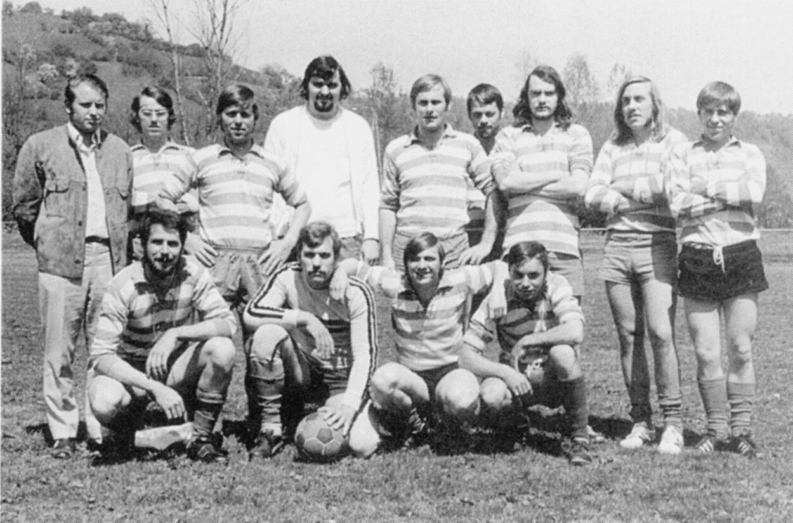

Grußwort für den TSV Hessental
In diesem Jahr feiert der TSV Hessental sein 50-jähriges Bestehen. Hierzu beglückwünsche ich ihn herzlich. Gleichzeitig möchte ich ihm aber auch zu seinem eigenen Geburtstagsgeschenk gratulieren, nämlich zum Wiederaufbau des Vereinsheims, das in der Sportwoche vom 15.-24. Juni 1973 offiziell seiner Bestimmung übergeben wird.
Als der TSV Hessental im Jahr 1923 in Form einer Turnabteilung gegründet wurde, war er der einzige Sportverein der damaligen Gemeinde Hessental. Heute, 37 Jahre nach der Eingemeindung Hessentals, gehört er zu den 29 Vereinen der Stadt. Trotz dieser großen „Konkurrenz“ und dem reichen Angebot sportlicher Disziplinen in Schwäbisch Hall repräsentiert der TSV immer noch auf sportlichem Gebiet Hessental, vor allem mit der Fußball- und Turnabteilung.
Darüber hinaus gehört er aber längst zu den bedeutenden städtischen Vereinen deren Eigenleben und Eigenart charakteristisch auf Grund ihrer Tradition geprägt sind. Dies nicht zuletzt, dank einer sehr schlagkräftigen Tischtennisabteilung, auf deren Initiative und mit deren Hilfe vor Jahren die Deutschen Jugendmeisterschaften im Tischtennis in Schwäbisch Hall stattfanden. Der TSV Hessental ist eines der Beispiele für die heutige Zusammengehörigkeit Hessentals und Halls.
Ich wünsche dem Verein auch weiterhin eine solch erfolgreiche Arbeit wie in den vergangenen 50 Jahren und seinen Mitgliedern und Anhängern viele schöne Stunden im neuen Heim.
Hartmann
Oberbürgermeister
Zum Gruß und Geleit
50 Jahre TSV Hessental – ist dies eine lange oder kurze Zeit? Gemessen an der Geschichte sind 50 Jahre nicht viel und sicher kein Grund zum Feiern. Für die Männer und später auch für die Frauen aber, die den Verein gründeten und ihn erhalten, liegt darin ein großer Teil ihres Lebens: viel von Idealismus getragene Arbeit, ernste und frohe Stunden im Kreise von Gleichgesinnten, gemeinsame Freude über Erfolge, Mittragen von Niederlagen und der Wille, das selbst gesteckte Ziel zu erreichen. So betrachtet sind 50 Jahre es wert, festlich begangen zu werden.
Seit dem 40-jährigen Jubiläum des TSV Hessental, bei dem der neue Sportplatz seiner Bestimmung übergeben werden konnte, hat sich vieles getan. Die damals mit auf den Weg gegebenen Hoffnungen und Wünsche sind auf fruchtbaren Boden gefallen. Zu erkennen ist dies in der regen sportlichen Tätigkeit, besonders der Jugend, und es ist auch sichtbar geworden am neuen Vereinsheim, das im Rahmen des 50-jährigen Jubiläums offiziell eingeweiht werden soll. Schon seit längerem ist es mit Leben erfüllt.
Ich habe allen Grund, all denen, die mit mir und meinen Vorgängern die Geschicke des Vereins geleitet haben, herzlich zu danken. Ohne sie wäre es nicht möglich gewesen, mit den vielen kleinen und großen Problemen fertig zu werden und die Voraussetzungen für eine gedeihliche sportliche Arbeit, wozu besonders der Bau des Vereinsheims gehört, zu schaffen. Dank auch denen, die dem Verein auch dann die Treue gehalten haben, wenn der Erfolg einmal ausgeblieben war. Dank gebührt ebenfalls der Stadt Schwäbisch Hall und den Gönnern des Vereins für ihre finanzielle Unterstützung, ohne die unsere Arbeit nicht möglich und insbesondere die Sportanlage mit dem Vereinsheim nur ein Wunschdenken geblieben wäre.
Ich hoffe, dass dieses Fest dazu beiträgt, unsere Idee zu fördern, das Band der Kameradschaft unter den Sportlern und Mitgliedern enger zu knüpfen und noch Außenstehenden den Anstoß zu geben, mitzumachen. Unseren Aktiven und Jugendlichen soll es Ansporn sein, im friedlichen Wettbewerb die Farben des Vereins zu vertreten, ihm zu Ansehen und Erfolg zu verhelfen und mit Begeisterung am Fortbestand des TSV Hessental weiterzuarbeiten.
In diesem Sinne grüßen wir unsere Freunde und Vereinsmitglieder. Unseren Gästen rufen wir ein herzliches Willkommen zu, verbunden mit dem Wunsche, dass unser Fest gelingen möge.
Gottfried Müller
1. Vorsitzender TSV Hessental
Ein Verein wird geboren
Es war Frühjahr 1923. Die Menschen waren durch die Inflation als Folge des verlorenen Krieges immer ärmer geworden, wenn sie auch „Milliardäre“ waren. Da suchten einige Hessentaler etwas Wertbeständiges zu schaffen. Sie fanden sich – es waren Mitglieder der SPD-Ortsgruppe Schwäbisch Hall – im Gasthof „Zur Krone“ in Hessental zusammen und riefen eine Turnabteilung ins Leben. Sie hatten erkannt, dass für die Erhaltung der Gesundheit und die Ertüchtigung, besonders der Jugend, etwas getan werden muss, dass gerade für die Jugend bessere Werte angeboten werden müssen.
Es waren damals u. a. dabei: Karl Walter, Heinrich Busch, Heinrich Drißler, Karl Kübler, Gottfried und Karl Klingler, Ludwig Fritzch, Louis Hertle und Karl Horlacher. Der so neugegründeten Abteilung fehlte es an allem, insbesondere auch an Turngeräten. In sportlich kameradschaftlicher Weise sprang hier der „Arbeiterturnverein Jahn Schwäbisch Hall“ ein und stellte die Geräte den Hessentaler Turnern zur Verfügung. Die Betreuung der Abteilung lag bei der SPD-Ortsgruppe Schwäbisch Hall. Die Turnabende wurden im Garten der Gaststätte „Zur Eisenbahn“ abgehalten.
Trotz dieser bescheidenen äußeren Voraussetzungen wuchs die Zahl der aktiven und passiven Mitglieder bis zum Herbst 1923 so stark an, dass man sich selbständig machen konnte. In der Gründungsversammlung erhielt der Verein den Namen „Arbeiterturnverein Jahn Hessental“. Von nun an war der Verein nicht mehr an die SPD gebunden.
Die Mitgliederversammlung wählte folgende Männer in den Vorstand:
| Vorsitzender | Karl Walter sen. |
|---|---|
| Kassier | Heinrich Busch |
| Schriftführer | Heinrich Drißler |
| Turnwart | Kurt Kübler |
Mit allen Kräften wurde der Turnbetrieb aufgenommen und ausgebaut. In Gemeinschaftsarbeit entstand bei Schmied Hirth ein Salonreck. Die Turnabende fanden fleißigen Zuspruch und immer neue Mitglieder traten dem Verein bei. Zum Landessportfest in Cannstatt wagte sich die 1. Turnriege mit den Kameraden Heinrich Drißler, Gottfried und Karl Klingler und konnten gleich eine Siegerurkunde mit nach Hause nehmen.
Beim 1-jährigen Stiftungsfest im Sommer 1924, das natürlich festlich begangen wurde, fand ein Wertungsturnen statt. Gegen schärfste Konkurrenz der Turnriegen aus Öhringen, Crailsheim, Pfedelbach und Schwäbisch Hall errang Gottfried Klingler den 1. Preis.
Die Übungsabende mussten immer noch im Freien im Hof „Zur Eisenbahn“ abgehalten werden. Um der Wetterabhängigkeit begegnen zu können, suchte der Verein nach einem Übungsraum. Herr Wolf von der Gaststätte „Zur Eisenbahn“ wollte hier Abhilfe schaffen und einen Saal bauen. Er erhielt jedoch zunächst keine Genehmigung. Nachdem sich der „ATV Jahn Hessental“ dafür einsetzte, konnte die Baugenehmigung schließlich doch erreicht werden. So hatten die Turner ab 1925 einen Übungsraum und waren nicht mehr vom Wetter und den Jahreszeiten abhängig. Die bessere Übungsmöglichkeit brachte eine Leistungssteigerung mit sich, die sich an den Erfolgen bei einheimischen und auswärtigen Turnfesten zeigte. Beim Sportfest in Pfedelbach im Jahre 1927 errangen die Kameraden Pollin und Biermann im 1500 Meterlauf die ersten Plätze, im Gerätekampf für die Jugendmannschaften gingen die Hessentaler unter der Leitung von Gottfried Klingler als Sieger hervor. In den folgenden Jahren wurden die Sportfeste in Neckargartach, Heilbronn und Crailsheim mit kampfstarken Riegen beschickt. Philipp Ebert und Alfons Wolf brachten von dort 1. Siegerurkunden mit nach Hause.
Im Jahre 1929 wurde der Wunsch, Fußball zu treiben, so stark, dass eine Fußballabteilung aus der Taufe gehoben werden konnte. Das erste Wettspiel fand auf dem „Ghagbuckel“ statt. Der Gegner war Affaltrach. Die Spieler dieser 1. Mannschaft waren Brecht I, Brecht II, Alfons Wolf, Fritz Hofmann, Karl Rappold, Alfred Pollin, Karl Walter, Gottlob Dierolf, Alois Pfitzer, Ebert I und Ebert II.
Ein Jahr später wurde ein besserer Sportplatz gepachtet. Dort, wo heute das „Bistro“ steht, war damals noch Wiese. Sie gehörte Herrn Erhard. Für eine Jahrespacht von 30,- RM konnte sie als Sportplatz benutzt werden. Durch den Sportbetrieb auf diesem Platz blieb es nicht aus, dass es zu Streitigkeiten mit den Anliegern kam. Denn immer wieder gingen die Bälle zu weit ins „Aus“. Dies wurde besser als der Verein unter großen Opfern Fangnetze errichtete. Zur Einweihung des Sportplatzes im Jahre 1929 fand ein Turnfest statt. An den Wettkämpfen beteiligten sich sechs auswärtige Vereine. Viele Zuschauer aus nah und fern umsäumten den grünen Rasen.
Zum Bundesturnfest des Jahres 1931 in Nürnberg fuhren die Kameraden Eduard Randi und Alfred Pollin. Im folgenden Jahr wurde der Turn- und Spielbetrieb noch weiter ausgebaut. Der „ATV Jahn Hessental“ hatte sich bis dahin im Turnkreis Hohenlohe bewährt und sein Name einen guten Klang.
Diese solide Aufbauarbeit wurde durch die Gleichschaltung der Turn- und Sportvereine im Jahre 1933 zunichte gemacht. Der „ATV Jahn Hessental“ wurde aufgelöst. Alle Akten des Vereins wurden vernichtet. Das Vermögen, das in der Hauptsache in Sportgeräten bestand, wurde beschlagnahmt und der Schule zugeführt. Die Aktiven schlossen sich entweder der DJK Steinbach, die aber später das gleiche Schicksal traf, oder dem SC Steinbach an.
Die letzte Vorstandschaft bestand aus:
| Ehrenvorstand | Karl Wolf sen. |
|---|---|
| Vorsitzender | Hermann Baumann |
| Kassier | Eduard Randi |
| Schriftführer | Wilhelm Scherer |
Zu nennen sind daneben Hermann Horlacher und Franz Brecht, die dem Verein lange Jahre eine starke Stütze gewesen waren.
Nach der Wiedergründung
Nach Kriegsende und dem totalen Zusammenbruch eines Volkes hatte zunächst jeder mit sich selbst zu tun, um überhaupt überleben zu können. Doch bald schon, als man den Kopf wieder etwas heben konnte, erinnerte man sich an den alten „ATV“. Es wurde der Wunsch laut, wieder Sport zu treiben und einen Verein zu gründen. Es dauerte dann nur bis zum 22. Januar 1947 bis auf Einladung von Fritz Markus eine Gründungsversammlung in der „Krone“ stattfand. Dort konnte der Kreissportvorsitzende und Kreissportbeauftragte Wilhelm Walter über 100 interessierte Sportkameraden begrüßen. Das Ergebnis dieser Versammlung war der Beschluss, den alten Verein unter dem Namen „Turn- und Sportverein Hessental“ mit den alten Farben rot und weiß wieder aufleben zu lassen. Damit wurde der 14-jährigen unfreiwilligen Pause im Sportleben der Gemeinde Hessental ein Ende gesetzt.
Unter der Leitung von
| 1. Vorsitzender | Fritz Markus |
|---|---|
| 2. Vorsitzender | Ignatz Dempf |
| Kassier | Franz Kaiser |
| Schriftführer | Willi Krambs |
| Jugendleiter | Heinrich Panzer |
| Technischer Leiter | Hans Kirsch |
| Beisitzer | Willi Greiner |
| Otto Leutlein |
begann ein neues Kapitel für den Verein.

Während bis zum Jahre 1933 das „Turnen“ groß geschrieben wurde und der Fußball nur für vier Jahre eine Rolle spielte, stand der TSV Hessental nach seiner Wiedergründung zunächst ganz im Zeichen des Fußballsports. Es vergingen Jahre ehe andere Sportarten von Dauer hinzukamen. An Versuchen, den Handballsport und die Schwerathletik zu betreiben, hat es nicht gefehlt. Sogar ein Spielmannszug vertrat die Farben des TSV Hessental. Im Jahre 1952 wurde eine Schützenabteilung gegründet, die sich als Nachfolgerin des gleichfalls im Jahre 1923 entstandenen und 1945 verbotenen Schützenvereins Hessental betrachtete. Sie musste sich, da Schützenvereinen eine Selbständigkeit noch verboten war, dem TSV Hessental anschließen. Im Jahre 1953 tritt die BSB Löwenbrauerei dem TSV als kooperatives Mitglied bei. Am 10.11.1961 wurde die TT-Abteilung gegründet. Ihr folgte am 12.10.1964 die Gründung einer Turnabteilung.
Mit Beginn des Jahres 1970 wurde die Schützenabteilung aus dem Verein entlassen, nachdem zwischen ihr und dem Schützenverein Sulzdorf eine Fusion vorgenommen worden war und beide unter dem Namen Schützenverein Sulzdorf Hessental weiterbestehen.
Bis zum Jahre 1961 stellt sich das Leben des TSV Hessental im wesentlichen als das seiner Fußballabteilung dar. Über sie und die später hinzugekommenen Abteilungen soll ein kurzer Abriss gegeben werden, der ihre Tätigkeit und Erfolge würdigt. Manch eifriger Sportler mag entschuldigen, wenn er dabei nicht alles aufgezeichnet findet.
Ehe die einzelnen Abteilungen zu Wort kommen, sollen einige Marksteine auf dem Weg des TSV ins Gedächtnis gerufen werden:

| 1953 | Die Stadt Schwäbisch Hall kauft das bis dahin vom Verein als Sportplatz gepachtete Gelände und stellt es dem TSV zur Verfügung. Der Platz wird umschrankt, eine kleine Hütte als Umkleide- und Geräteraum erstellt. |
|---|---|
| Anschließend wird ein kleines massives Häuschen mit Waschgelegenheit und Abort gebaut. | |
| 1955 | Die Löwenbrauerei Schwäbisch Hall stellt eine Baracke als Vereinsheim zur Verfügung, das noch im gleichen Jahr eingeweiht wird. |
| 1957 | Der TSV Hessental erhält von der Stadt Schwäbisch Hall kostenlos die Kindergartenbaracke. Sie wird an der alten Stelle abgebrochen und am Sportplatz als „Trainingshalle “ mit einer Länge von 22m an das bestehende Vereinsheim angebaut. |
| Zum ersten Mal sind die Mitglieder aufgerufen, freiwillige und kostenlose Arbeit für den Verein zu leisten. Trotz einer Vielzahl von Helfern verschlingt der Bau die stolze Summe von 12000,- DM. Totomittel und ein Darlehen der Stadt erleichterten die Finanzierung. | |
| 1959 | Neben dem Vereinsheim wird eine Wasch- und Duschanlage geschaffen, verbunden mit einem kleinen Geräteraum und besseren sanitären Anlagen. |
| Wiederum sind die Mitglieder aufgerufen, Eigenleistungen zu erbringen. | |
| 1964 | Einweihung des neuen Sportplatzes, nachdem zwei Jahre zuvor mit den Arbeiten wie Bachüberdolung, Dränieren, Planieren u. ä. begonnen worden war. Dieses umfangreiche Projekt hätte die Kräfte des TSV überschritten. Deshalb hat die Stadt Schwäbisch Hall Bau und Finanzierung übernommen. |
| 1964 | Fertigstellung der Turnhalle bei der Hessentaler Schule, die auch dem TSV zur Verfügung steht. |
| 1967 | Sturmschaden am Vereinsheim mit Übungshalle, beides wird „vom Winde verweht“. Die Löwenbrauerei stellt eine Baracke als Vereinsheim zur Verfügung. |
| 1970 | Beginn des Baus eines neuen Vereinsheims. Verlegung der Kläranlage und des Abflusskanals. |
| 1971 | Beginn der Hochbauarbeit für das Vereinsheim. |
| 1973 | Fertigstellung des Vereinsheims bis auf die Außenanlagen. |
Wenn von der Geschichte des TSV berichtet wird, dürfen die alljährlichen Winterfeiern nicht vergessen werden. Jedes Jahr Anfang Januar trifft sich die Vereinsfamilie zu fröhlichem Tun, um die „Aktiven“ auf der Bühne zu bewundern und zu belachen. Als Höhepunkte im Vereinsleben (und als Finanzquelle) sind diese Feiern nicht wegzudenken. Seit dafür die Turnhalle zur Verfügung steht, bieten sich hier neue Möglichkeiten. Die Vereinschronisten „Fröhlich und Schön“ waren immer dabei und werden es, auch wenn andere die Rollen übernehmen, hoffentlich noch lange bleiben.

Die Vereinsleitung im Jubiläumsjahr
| 1. Vorsitzender | Gottfried Müller |
|---|---|
| 2. Vorsitzender | Erich Brucker |
| Schriftführer | Gerhard Klingler |
| Hauptkassier | Werner Auwärter |
| Platzkassier | Peter Falk |
| Vereinsheimrechner | Günter Ritter |
| Fußball-Herren | Heinz Schiele |
| Fußball-Jugend | Herbert Lamparter |
| Tischtennis | Roland Heckelmann |
| Tischtennis-Jugend | Eugen Lösch |
| Frauenturnen | Hilde Bauer |
| Kinderturnen | Hilde Bauer |
| Beisitzer | Gerhard Weidner |
| Horst Ritter | |
| Wilfried Kurz | |
| BSB Löwenbrauerei | Klaus Dehlinger |
Träger der Goldenen Ehrennadel
Hermann Baumann
Ignatz Dempf
Hugo Richter
Willi Greiner
Roland Heckelmann
Aus dem Leben der Fußballabteilung
Der Spielbetrieb der Fußballabteilung nach der Wiedergründung begann in der B-Klasse. Gleich im ersten Spieljahr konnte die Meisterschaft errungen und damit der Aufstieg in die A-Klasse geschafft werden. Dort blieb der TSV auch mit einer Unterbrechung im Jahre 1956 bis zur Spielrunde 1970/71. Was 1956/57 möglich war, nämlich ein Jahr nach dem Abstieg wieder „da“ zu sein, konnte leider nicht wiederholt werden. Natürlich hoffen alle, den angestammten Platz in der A-Klasse wieder zu erreichen. Die Hauptsache aber ist es, den geliebten Fußballsport überhaupt betreiben zu können.
In der A-Klasse wurde mit wechselndem Erfolg gespielt. Oft war der TSV mit vorn dabei, wie in den Spieljahren 1962/63 und 1968/69, in denen der 3. und 2. Platz erkämpft wurde. Meistens mischte die 1. Mannschaft in der „Mitte“ mit. Spannend wie Spiele um die Meisterschaft waren die Begegnungen, bei denen es um „Sein oder Nichtsein“, um den Klassenerhalt ging.
Besonders erfolgreich waren unsere Fußballer 1968/69 und 1969/70. In der Pokalrunde 1968/69 wurden sie Pokalmeister der A-Klasse und auch des Bezirks Hohenlohe. Nachdem der Pokalsieg in der A-Klasse durch ein 4:2 gegen den VfR Altenmünster sicher nach Hessental gebracht worden war, kam es am 5. April 1969 auf den Kocherwiesen in Steinbach zur Entscheidung um den Bezirkspokal. Gegner war der TSV Michelbach/Bilz, Pokalmeister der B- und C-Klassen. Nach einem ausgeglichenen Spiel, das bis zur 84. Minute 1:1 stand, nachdem Keller das Führungstor und Aldinger den Ausgleich für Michelbach erzielt hatten, brachte Frey den entscheidenden und vielbejubelten 2. Treffer im Tor der Michelbacher unter.

In der folgenden Spielrunde sah es zunächst so aus, als sollten sich die Pokalsiege wiederholen. Am 1. November 1969 konnte in Crailsheim gegen die SpVgg Hengstfeld die Pokalmeisterschaft der A-Klasse gewonnen werden. Mit dem dabei erzielten 3:1-Sieg bestanden alle Hoffnungen, den Bezirkspokal zum zweitenmal mit nach Hause bringen zu können. Beim Entscheidungsspiel in Obersontheim gegen den TSV Ilshofen fehlte ein bißchen das Glück. Trotz überlegen geführtem Spiel ging mit 0:1 der Pokal nach Ilshofen. Die Abgänge und Ausfälle so guter Spieler wie Keller, Ludwig und Gierok machten sich schon bemerkbar.
Die Spielrunde 1970/71 brachte dann den Abstieg in die B-Klasse. Was viele schon nach dem Abschneiden in der vorangegangenen Spielrunde befürchtet hatten, trat leider ein. Die Spielerabgänge waren nicht zu verkraften. Von Anfang an bis zum Ende der Runde, auch eine Einmaligkeit, trugen die Hessentaler die „Rote Laterne“. Danach wurde prophezeit, dass auch die B-Klasse noch eine Schuhnummer zu groß für den TSV sei. Diese Unkenrufe haben sich nicht bewahrheitet. Vielmehr ist zu hoffen, dass bessere Resultate erzielt werden. Ansätze dazu sind schon zu erkennen. Das Ziel, der Aufstieg in die A-Klasse, kann in einer der nächsten Spielrunden geschafft werden.
Die Fußballer bestritten nicht nur ihre Pflichtspiele. Es kam vielmehr auch zu interessanten Freundschaftstreffen. So wurde zweimal nach Langres in Frankreich gefahren, 1960 und 1961. Auch der Gegenbesuch blieb nicht aus. Auf Initiative des damaligen Abteilungsleiter Walter Bauer kam es 1963 erstmals zur Austragung der Stadtmeisterschaft, die seitdem jedes Jahr einen Höhepunkt im Sportleben von Schwäbisch Hall darstellt. In diesem Jahr findet sie wiederum im Rahmen unseres Jubiläums in Hessental statt und verspricht besonders spannend zu werden, nachdem weitere Vereine hinzugekommen sind.
Neben Pokalturnieren, die immer einen Höhepunkt im Vereinsleben bedeuten und von denen viele Pokale mitgebracht werden konnten, sind die Freundschaftsspiele mit dem VfB Stuttgart zu erwähnen. die am 6. September 1967 und am 30. Mai 1968 in Hessental ausgetragen wurden und mit zweistelligen Ergebnissen endeten, natürlich für Stuttgart.

Wie alle Sportler gingen auch die Hessentaler Fußballer gern auf Reisen. Immer in guter Erinnerung wird der Ausflug nach Riva am Gardasee im Jahre 1963 bleiben, den unser unvergessener Walter Bauer organisierte. Einen neuen Impuls brachte hier auch die letztjährige Tagesreise über Tripsdrill nach Waldbach. Es ist zu erwarten, dass diese gute Tradition weiter belebt wird, wenn die Belastungen durch Vereinsheimbau und 50-Jahrfeier überstanden sind.
Unsere Aktiven

Dierolf, Miemcyk, Ritter, Rieger, Babiej, Kurz W., Balk, Greiner, Franz H., Stapf, Speer


Gaschler, Weißbarth, Baumann W., Stapf, Kantlehner, Baumann K., Wohlmuth, Hornung, Otterbach, Bonz, Walter B., Kranz, Fuchs
Die Fußballjugend berichtet
Sofort mit der Wiedergründung im Januar 1947 wurde eine Jugendabteilung ins Leben gerufen, um den Nachwuchs für die aktiven Mannschaften sicherzustellen. Genau wie bei den Aktiven konnte die Jugendmannschaft gleich im ersten Jahr auf Kreisebene die Meisterschaft erringen. Höhere Meisterehren gelangen nicht, denn am 9. April 1948 ging das erste Vorentscheidungsspiel gegen die TSG Öhringen mit 0:2 verloren. Es war dennoch ein schöner Erfolg, den die damalige Jugendmannschaft mit den Spielern Bröllochs, Sperr, Dietrich, Hamleh, Sommer, Schelle, Schust, Greiner und Schwenger verzeichnen konnte.
Es dauerte dann Jahre, ehe die Hessentaler Jugend wieder aufhorchen ließ. Trotzdem wurde immer eifrig gespielt und ständig waren drei Mannschaften im Wettbewerb. Unter der Leitung ihres langjährigen Jugendleiters Roland Heckelmann wurden dann einmalige Erfolge erzielt, an die sich die Hessentaler gern und ihre Konkurrenten mit Respekt erinnern.
Im Spieljahr 1957/58 stellte die A-Jugend den Kreismeister, die B-Jugend wurde Kreis- und Bezirksmeister. Nicht weniger erfolgreich war die Hessentaler Jugend im Spieljahr 1959/60. Unsere A-Jugend warf die A1-Jugend der Sportfreunde Schwäbisch Hall mit 4:1 aus dem Rennen und wurde Kreismeister. Durch einen 1:0-Sieg über den TSV Künzelsau, dem Kreismeister der Gruppe II, wurde der Bezirksmeister geschafft. Fünf Kreismeister- und drei Bezirksmeisterwimpel konnte damit unsere A-Jugend ihr eigen nennen. Diese stolze Bilanz wird nicht dadurch geschmälert, dass schon im ersten Spiel um die Württembergische Jugendmeisterschaft eine Niederlage eingesteckt werden musste. Der Gegner war die TSG Giengen.

Diese Erfolge stellten sich nicht von ungefähr ein. Eifriges und fachgerechtes Training waren dazu ebenso notwendig wie ein ausgeprägter Kameradschaftsgeist. Ohne diesen geht es einfach nicht. Durch die unermüdliche Betreuung der Jugend durch ihren Leiter und seinen Helfern war er geweckt und aufrecht erhalten worden.
Zwischendurch wurden viele Freundschaftsspiele ausgetragen u. a. gegen Stuttgarter, Feuerbacher, Ludwigsburger und Heilbronner Vereine. Höhepunkte waren die Freundschaftsspiele gegen eine englische Schülermannschaft und das der A-Jugend in Langres/Frankreich, die beide gewonnen werden konnten.
Danach spielten und hielten sich die Jugendmannschaften immer an guter Stelle in den Kreisstaffeln und die A-Jugend kam als Meister ihrer Kreisstaffel in die des Bezirks, wo sie lange mithalten konnte. Seit vier Jahren ist bei der Jugendabteilung ein ständiger Auftrieb festzustellen. Es ist zu hoffen, dass sich bald wieder solche Erfolge einstellen, wie sie aus den Jahren 1958-60 berichtet wurden. Immer wieder konnten Meisterschaften in den einzelnen Staffeln erkämpft werden und die Bezirksmeisterschaft lag nahe. Neben dem Leistungsanstieg ist die Anzahl der Mannschaften auf ein Maximum angewachsen. 1972 waren eine Mannschaft der A-Jugend, zwei der B-Jugend und je drei der C- und D- und zwei der E-Jugend im Spielbetrieb. Die B1-Jugend ist schon Meister ihrer Staffel und die A-Jugend kann es werden, wenn der Mitbewerber bei seinen Nachholspielen das Nachsehen hat. Die anderen Mannschaften halten gute Plätze. Soweit es möglich ist, werden sich die Mannschaften um den Aufstieg in die Bezirksstaffeln bewerben.
Besonderes Augenmerk richtet die Jugendabteilung auf den jüngsten Nachwuchs. Das zeigt sich daran, dass allein für die 8-12 jährigen, E- und D-Jugend, fünf Mannschaften betreut werden. Eine sechste Mannschaft der E-Jugend wurde zurückgezogen. Es nimmt deshalb nicht Wunder, wenn die Jugendabteilung es als Auftakt zu den Jubiläumsveranstaltungen des TSV offene Stadtmeisterschaften für die E- bis B-Jugend ausschrieben und dafür die Unterstützung des Stadtverbandes für Leibesübungen erhielt. Vielleicht gibt dieser Versuch den Anstoß, diese Meisterschaften alljährlich zu wiederholen. Die B1- und C-Jugend des TSV sind bei diesem Wettbewerb Stadtmeister 1973 geworden, die D-Jugend wurde Vizemeister, konnte also ihren Erfolg von 1970, als diese ausgetragen wurde, nicht wiederholen.
Diese eifrige Mitarbeit der Fußballjugend des TSV Hessental bei Aufgaben des Stadtverbandes für Leibesübungen z.B. bei Vergleichskämpfen wurde dadurch belohnt, dass ein 2-Tagesausflug nach Wertheim durchgeführt werden konnte. Der damalige Vorsitzende und heute Ehrenvorsitzende des Stadtverbandes, Herr Alfons Besenfelder ließ es sich nicht nehmen, im Mai 1970 mit dabei zu sein.
Angeregt durch diese Reise fuhren die Hessentaler Jugendmannschaften ein Jahr später gleich nocheinmal in die Main-Tauber-Stadt. Die Schiffsreise von Wertheim nach Miltenberg ist noch in guter Erinnerung. Eingedenk der Erkenntnis, dass die Kameradschaft zu fördern ist, was auf solchen Fahrten im besonderen Maße geschieht, werden Pfingsten 1973 die Jugendmannschaften in Kirchbichl/Tirol sein, nachdem 1972 Bad Mergentheim Ziel des Ausflugs war. Dass dabei immer Freundschaftsspiele ausgetragen werden, versteht sich von selbst und gibt interessante Leistungsvergleiche.
Neben diesen Jahresausflügen kommen die fast 90 Jungens des TSV immer wieder zu Kameradschaftsabenden zusammen. Eltern- und Diskussionsabende werden ebenso abgehalten, wie Kegelabende mit den Jugend-Schiedsrichtern des TSV. Die Weihnachtsfeier ist schon beinahe Tradition. Der Besuch des Bundesligaspielers Hennes Löhr vom 1. FC Köln im Jahre 1972 ist allen noch in guter Erinnerung.


Ohne seine Jugend ist jeder Verein in Gefahr, seine Grundlage zu verlieren. Dem TSV Hessental braucht es aber hier nicht bange zu sein. Es ist deshalb angezeigt, an dieser Stelle die Arbeit der Jugendleiter und ihrer Helfer besonders herauszustellen. Neben Roland Heckelmann, der hier den Maßstab gesetzt hat, ist seinen Nachfolgern Dank für ihre opfervolle Arbeit zu sagen und ihre Namen zu nennen: Reinhold Wagner, Julius Hornung, Kurt Schust, Eberhard Huter und Herbert Lamparter. Der Dank gilt auch ihren Helfern, den Mannschaftsbetreuern und Trainern. Dafür konnten erfreulicherweise immer wieder ältere Aktive und Väter der jungen Spieler gefunden werden.
Die Turnabteilung berichtet
Nachdem die Stadt Schwäbisch Hall ihre Verpflichtung aus dem Eingemeindungsvertrag mit der Gemeinde Schwäbisch Hall erfüllt und eine Turnhalle für die Hessentaler Volksschule errichtet hatte, war es beinahe selbstverständlich, dass sich der TSV auch um das Turnen bemühen wird. Am 12. Dezember 1964 war es dann soweit, dass eine Turnabteilung gegründet werden konnte. Es stellte sich aber bald heraus, dass nicht das Raumproblem entscheidend war. Es fehlte auch nicht an Interessenten, wenn man vom Männerturnen einmal absieht. Problematisch war und ist bis heute die Personalfrage geblieben. Sie konnte bisher nur für die Frauenabteilung und das Kinderturnen gelöst werden. Die Männerriege dagegen konnte sich nicht halten, weil es keinen Übungsleiter gab, der eine Durststrecke mit geringerer Beteiligung durchgestanden hätte.
Dagegen ließ sich die Frauenabteilung gut an. Sie hat sich im Verlaufe der vergangenen acht Jahre ganz schön gemausert. Natürlich wird kein Leistungssport betrieben, so dass an sich jede Frau mitmachen könnte, denn es geht nur um einen gesunden Ausgleich zur Einseitigkeit des Alltaglebens, auch auf geselligem Gebiet. So kommen die Turnerinnen neben den regelmäßigen Übungsabenden auch zu anderen Veranstaltungen zusammen. In den letzten drei Jahren haben sie in dankenswerter Weise das Programm bei den Jahresfeiern des Vereins durch tänzerische Darbietungen bereichert. Die Turnerfrauen sind deshalb aus dem Vereinsleben nicht mehr wegzudenken.
In uneigennütziger Weise haben es darüber hinaus einige Frauen der Turnabteilung übernommen, den Kindern Gelegenheit zu geben, jeden Mittwoch zu turnen. Ohne viel Aufsehen wird diese so notwendige Arbeit geleistet. Hierfür gebührt ihnen ein besonderer Dank.
Bei den Jungen sah es eine Zeit lang recht gut aus. Die Übungsstunden waren gut besucht, auch von jungen Fußball- und Tischtennisspielern. Es bedeutete deshalb einen schweren Schlag, als im Sommer 1972 der Übungsleiter abgezogen werden musste, weil die Anzahl der von ihm zu haltenden Stunden in der Vereinsarbeit gekürzt wurden. Ein Nachfolger ist bisher noch nicht gefunden worden. Der TSV hofft nur, dass recht bald wieder ein Übungsleiter eingesetzt werden kann, der auch Spaß daran hat, unter nicht ganz einfachen Verhältnissen mit den Jungen zu spielen und zu turnen.


Von unserer TT-Abteilung
Um der sportlichen Einseitigkeit im TSV Hessental zu begegnen und um weiteren Interessenten eine sportliche Tätigkeit zu ermöglichen, rief im Herbst 1961 der TSV auf Anregung von Roland Heckelmann zur Gründung einer Tischtennisabteilung auf. Im Nebenzimmer der „Krone“ in Hessental, kam ein kleines Häuflein von acht Mann zusammen, um die neue Sparte aus der Taufe zu heben. Trotz der nicht gerade ermutigenden Zahl der Interessenten wurde der Spielbetrieb mit Vorbehalt begonnen und der TSV um eine weitere Abteilung bereichert.
Das Eröffnungsspiel in Wolpertshausen gab ersten Auftrieb: 9:6 für Hessental und „zehn neue Mitglieder“. 1962 schon konnte neben der 1. Herrenmannschaft eine 2. und auch eine Damenmannschaft zum Spielbetrieb angemeldet werden. Die ersten sportlichen Erfolge der 1. Herrenmannschaft in der Kreisklasse 1 fielen ebenfalls in dieses Jahr.
Die Jugend trat 1963 erstmals in Erscheinung. Unter Anleitung von Franz Tomerl machte die 1. Männliche Jugendmannschaft mit Herbert Fischer, Wilfried Kurz, Eugen Lösch, Gerhard Wagner und Wolfgang Windmüller die ersten Gehversuche. Die Mopedreisen zu den damaligen Verbandsspielen bleiben in unvergessener Erinnerung.
Mittlerweile wuchs die TT-Abteilung auf 35 Mitglieder und somit zu einem beachtlichen Zweig des TSV heran. Die Jahre 1964-1966 bereits zeigten neben den sportlichen Erfolgen, dass die TT-Abteilung weit über den rein sportlichen Rahmen hinaus den TSV mit gutem Echo repräsentiert. So gehörten die Hessentaler TT-Spieler zu den ersten aktiven Sportlern, die unsere französische Partnerstadt Epinal besuchten. Drei Begegnungen in Frankreich und ebenso viel Treffen in Schwäbisch Hall sind angenehme Erinnerungen und brachten auch privat bleibende Verbindungen.
Der Bau einer Turnhalle für die Hessentaler Schule, womit die Stadt Schwäbisch Hall ein bei der Eingemeindung von Hessental im Jahre 1936 gegebenes Versprechen einlöste, wurden die Voraussetzungen für den Übungs- und Spielbetrieb wesentlich verbessert. Bis dahin wurde in der engen Baracke am Sportplatz trainiert und gespielt. Ab 1965 stand die schöne weiträumige Turnhalle hierzu zur Verfügung. Der Umzug geschah zur rechten Zeit, denn im Frühjahr 1967 wurde die als Vereinsheim und Übungshalle dienende Baracke am Sportplatz „vom Winde verweht“. Mit der Verbesserung der Verhältnisse für den Spiel- und Übungsbetrieb begann ein neuer Abschnitt in der Aufwärtsentwicklung der TT-Abteilung.
Die Jugendabteilung wurde auf Veranlassung von Eugen Lösch frisch formiert und „verjüngt“. Innerhalb kürzester Zeit betrug der Mitgliederstand 50 Jungen und Mädchen. Zusammen mit den aktiven Mannschaften hatte die TT-Abteilung in dieser Zeit 14 aktive Mannschaften im Spielbetrieb. Der sportliche Erfolg konnte dabei nicht ausbleiben.
Die Damenmannschaft unter der langjährigen Leitung von Wilma Gronbach, jetzt Frau Schwerin, stieg 1967 zur Landesliga auf. „Unsere Wilma“ war auf allen Turnieren weit über den Kreis hinaus nicht nur mit ihrer Mannschaft sondern auch als Einzelspielerin ein gern gesehener Gast und verhalf so dem TSV zu weiterem Ansehen. Die sportlichen Erfolge zeigten sich in verschiedenen Kreis- und Bezirksmeistertiteln. Eine zweite Damenmannschaft war ebenfalls im Spielbetrieb, ohne jedoch große sportliche Erfolge erzielen zu können.
Während bei den Herren 1969 das Jahr der großen Pokalerfolge war, es wurde der Bezirkspokal der Kreisklassen errungen, wurden im folgenden Jubiläumsspieljahr 1970/1971, die TT-Abteilung wurde 10 Jahre alt, ungeahnte Meisterschaften errungen. Die 1. Mannschaft schaffte den Aufstieg in die Landesliga und die 2. Mannschaft in die Bezirksklasse.
In diese Zeit des sportlichen „Hochs“ fielen auch die Ausrichtungen verschiedener Meisterschaften:
Die Durchführung der Stadtmeisterschaften von Schwäbisch Hall, zuerst auf Kreis- und dann auf Bezirksebene, geschah auf Anregung unserer TT-Abteilung. Diese Meisterschaften gehören jetzt schon zur Tradition. Die Ausrichtung der Meisterschaften wurde selbstverständlich von uns übernommen. Die reibungslose Durchführung dieser Meisterschaften sprach sich bis zum TT-Verband Württemberg Hohenzollern herum und ermutigten diesen, die Württembergischen Jugendmeisterschaften 1970 nach Schwäbisch Hall zu vergeben und den TSV Hessental mit der Ausrichtung zu betrauen. Nachdem auch diese Aufgabe vom TSV Hessental mit Bravour gemeistert wurde, erhielten wir die ehrenvolle Aufgabe, die Deutschen Jugendmeisterschaften 1971 in der Schenkenseeturnhalle in Schwäbisch Hall auszurichten. Diese Deutsche TT-Jugendmeisterschaft war für den TSV Hessental ein herausragendes und für lange Zeit auch wohl einmaliges Ereignis. Sein Echo fand Niederschlag in der Presse vom Bodensee bis Flensburg. Die Organisation klappte ausgezeichnet und der Jugendpräsident des Deutschen Tischtennisverbandes, Jürgen Haase aus Kiel, sowie Württembergs TT-Jugendwart, Gunther Peterhänsel aus Stuttgart, erinnern sich heute noch gerne an Schwäbisch Hall und den TSV.
Die Mammutveranstaltung brachte mehr als 300 Gäste aus allen Bundesländern nach Schwäbisch Hall. Allein die Unterbringung der Spieler und Betreuer in ansprechenden Quartieren kann als Meisterleistung bezeichnet werden. Die Schenkenseeturnhalle präsentierte sich vor zahlreichen Ehrengästen im schmucken, grünen Tischtennisgewand. 800 Personen waren bei den Endspielen dabei. Die wirtschaftliche Seite dieses mühevollen Einsatzes war Dank der unentgeltlichen Mitarbeit aller Abteilungsmitglieder wider Erwarten positiv, so dass die TT-Abteilung am Ende den Vereinsneubau mit einem Betrag von 1000.- DM fördern konnte.

Diese Anspannungen, wie sie die sportlichen Höhepunkte und die unbeschreibliche Arbeit zur Ausrichtung der Deutschen TT-Jugendmeisterschaft mit sich brachten, konnten auf die Dauer nicht durchgestanden werden. So blieb es nicht aus, dass sich im Jahre 1972 ein Nachlassen auf sportlichem Gebiet einstellte.


Die Damenmannschaft und die beiden Herrenmannschaften kämpfen seitdem eine Klasse tiefer um die Punkte. Die Abteilung steht nach wie vor mit den gleichen Spielern in den Wettkämpfen. Bei den Herren konnte sogar noch eine erfolgreiche 3. Mannschaft verzeichnet werden. Bei allen Mannschaften und Spielern herrscht weiterhin reges Interesse. Wenn auch eine Meisterschaft nicht errungen werden konnte, so wird doch an den vorderen Plätzen mitgemischt. In absehbarer Zeit kann deshalb wieder mit sportlichen Erfolgen gerechnet werden. Dem kameradschaftlichen Zusammenhalt der Abteilung konnte das Ausbleiben neuer sichtbarer Erfolge selbstverständlich keinen Abbruch tun. Neben den rein sportlichen Veranstaltungen blieb der TT-Abteilung immer noch Zeit und Lust, die Kameradschaft und Geselligkeit zu pflegen. Mit Maiwanderungen, Zeltlager, Weihnachtsfeiern und Ausflügen, z. B. nach Epinal, Gundelsheim, Wildbad und zuletzt Garmisch, haben es die Mitglieder der TT-Abteilung verstanden, dem ganzen Verein ein Beispiel zu geben, ohne dabei ihr „eigenes Süpplein“ zu kochen, denn die Sportkameraden der anderen Abteilungen konnten daran teilnehmen und taten es auch gern.

So hat die TT-Abteilung ihren festen Platz in der Vereinsfamilie des TSV. Mit ihren Leistungen konnte sie dazu beitragen, dass sie und der TSV weit über die Grenzen des Kreises Schwäbisch Hall und des Bezirks Hohenlohe einen guten Ruf haben und überall willkommen sind. Dieser Erfolg ist nicht zuletzt auf die fruchtbringende Tätigkeit ihres langjährigen Abteilungsleiters, Roland Heckelmann, aber auch auf die begeisterungsfähigen und mitziehenden Sportkameraden der TT-Abteilung zurückzuführen.
| Damen | |
|---|---|
| Mannschaftsführerin: | Wilma Schwerin |
| Herren | |
| Mannschaftsführer: | Günther Berger, Jürgen Krämer, Eugen Lösch, Gerhard Meiser, Lutz Schiemann, Gerhard Wagner, Manfred Walter, Wolfgang Windmüller |
Die Leiter der TT-Abteilung seit ihrer Gründung:
Abteilungsleiter
| 1961-1963 | Gerhard Meiser |
|---|---|
| 1964- | Roland Heckelmann |
Jugendleiter
| 1963-1965 | Franz Tomerl |
|---|---|
| 1966-1969 | Eugen Lösch |
| 1969-1970 | Bernd Walter |
| 1970-1972 | Roland Heckelmann |
| 1972- | Eugen Lösch |
Das Vereinsheim wird gebaut
Mit der Herrichtung eines ordentlichen Sportplatzes im Jahre 1964 wurde den Verantwortlichen des TSV klar, dass die Wasch- und Duschanlage und das Vereinsheim im „Barackstil“ bald nicht mehr den Erfordernissen eines modernen Sportbetriebs gerecht werden kann. Hinzu kam, dass an der Baracke Alterserscheinungen auftraten. Besonders zeigte sich das an der Westseite. Es war deshalb notwendig, die Fenster nach dieser Richtung zuzunageln, um die Übungshalle dicht zu halten. Durch den Übungsbetrieb in der Turnhalle verlor auch die hölzerne Übungshalle an Bedeutung. So begann man zu planen und zu sparen, um eine gute Grundlage für einen Neubau zu haben. Die Kassierer zeigten sich als wahre Künstler der Sparsamkeit, die oft genug kritisiert wurde. Das Ansparen wurde dadurch erleichtert, dass die Sportfeste und auch der Betrieb des Vereinsheims durch den selbstlosen Einsatz der Vereinswirte immer etwas einbrachten. Trotzdem fehlte es noch an dem richtigen Anstoß. Dieser kam dann mit unerwarteter Gewalt.


Im Februar 1967 „blies“ der Sturm das Vereinsheim samt Übungshalle um und zum Teil auch weit weg über den Platz. Nun blieb nichts anderes übrig, als ernstlich an den Bau eines neuen und festen Vereinsheims heranzugehen. Dabei brachte die bei einem Aufbau zu erwartende Entschädigung für den Sturmschaden eine nicht unbedeutende Verbesserung der finanziellen Voraussetzungen.
Wer nun glaubte, dass es „ruck-zuck“ gehen werde und ein neues Vereinsheim steht, sah sich allerdings enttäuscht. Es stellten sich nämlich Schwierigkeiten ein, die die Begeisterung und den Mut für das „Neue“ dämpfen mussten. Daran konnten auch nicht die Beispiele bei Nachbarvereinen viel ändern. Zwar sagte sich mancher, was die können, das geht bei uns schon zweimal. Man hörte aber auch, wie dort nach anfänglicher Begeisterung und einer Vielzahl von Helfern zuletzt Resignation eintrat, weil die Arbeit nur noch von wenigen geleistet wurde als die Hauptarbeit erledigt war.
Schon immer lag die Stromversorgung des Vereinsheims im argen, so dass zunächst auch nicht an eine Platzbeleuchtung zu denken war. Die Stromzufuhr kam von der Bundesbahn, die wegen der zu schwachen Zuleitung einfach nicht mehr Strom liefern konnte, selbst wenn sie es gewollt hätte. Sie musste auch die Versorgung aufkündigen, als die Gleisanlagen neu hergerichtet wurden, was schon im Hinblick auf eine Elektrifizierung der Bahnstrecke geschah. Endlich gelang es dann, die Verhandlungen mit der Fa. Heller & Co. zu einem Abschluss zu bringen und eine ausreichende Stromversorgung sicherzustellen. Die Kosten dafür waren jedoch außerordentlich hoch. Noch heute muss daran abgezahlt werden, was nur durch ein großzügiges Entgegenkommen der Stadtwerke Schwäbisch Hall möglich ist. Nunmehr konnte auch für den oberen Platz eine Beleuchtung errichtet werden.
Während die Wasserversorgung von Anfang an gesichert war, weil gleich zwei Wasserfernleitungen im oberen Platz liegen, wovon eine angezapft werden konnte, wurde die Abwasserbeseitigung zu einem umso größeren Problem. Es fehlte die Möglichkeit, mit erträglichen Kosten einen Anschluss an das Abwassersystem der Stadt Schwäbisch Hall herzustellen. Der Bahndamm, der schon für die Stromversorgung ein nur mit erheblichen Mehrkosten zu überwindendes Hindernis dargestellt hatte, war für eine Abwasserleitung praktisch unüberwindlich. Solange aber die Abwasserbeseitigung nicht gesichert war, konnte die Planung für das Vereinsheim nicht vollendet werden.
Ein Durchbruch gelang hier erst, als unser viel zu früh verstorbenes Mitglied Herr Architekt Eugen Scheuermann die Planung in die Hand nahm. Sie wurde dann noch im Jahre 1970 fertig und noch im Herbst des gleichen Jahres konnte mit der Verlegung der Kläranlage und eines Abwasserkanals begonnen und vor Einbruch des Winters beendet werden.
Es lagen zu diesem Zeitpunkt schon die Zusagen der Stadt Schwäbisch Hall und der Löwenbrauerei Schwäbisch Hall vor, den Bau mit beträchtlichen Zuschüssen zu fördern. Ebenso konnte mit staatlichen Mitteln aus den Toto- und Lottogeldern gerechnet werden, wenn auch erst nach Erreichung eines gewissen Abschlusses der Bauarbeiten.
Nachdem auch freiwillige und kostenlose Mitarbeit von sachkundigen Vereinsmitgliedern zugesagt waren, fehlte nur noch ein Mann, der die Initiative ergriff. Hier waren es die Sportkameraden Erich Brucker und Horst Gentner, die die notwendigen Impulse gaben. Dabei wurde Horst Gentner, ohne dass er es wohl selbst wollte und es vielleicht auch zu spät merkte, der Motor schlechthin. Es kann an dieser Stelle gesagt werden, dass ohne ihn der im Frühjahr 1971 begonnene Bau nicht so schnell Gestalt gewonnen hätte. Er hätte dann auch nicht schon seit Frühjahr 1972 wenigstens teilweise benutzt und jetzt auch offiziell eingeweiht werden können.
Durch geschicktes Verhandeln mit Zulieferfirmen und Handwerkern konnten die genannten Sportkameraden außerordentlich günstige Preise erzielen. Dabei stieß man auf großes Verständnis für die Belange des TSV Hessental. Es wurden so erhebliche Kosten gespart. Horst Gentner war es dann, der durch vorbildlichen und selbstlosen Einsatz immer wieder Sportkameraden und auch Freunde des Vereins fand, die mit ihm entweder kostenlos unter persönlichen Opfern oder gegen eine erträgliche Vergütung mitarbeiteten. Was hier geleistet wurde und was hierdurch gespart werden konnte, kann nur der ermessen, der die Höhe des Kostenvoranschlags und den tatsächlichen finanziellen Aufwand für den Bau kennt. Zwar können noch keine endgültigen Zahlen gesagt werden. Es sind aber „zig-Tausende“, die hierdurch gewonnen wurden. Bis Ende 1972 wurden über 6500 Arbeitsstunden für den Bau von Vereinsmitgliedern und Freunden geleistet. Das meiste geschah in eigener Regie, anderes unter Anleitung von Handwerkern. Daneben mussten viele Stunden für die Planung, die Verhandlungen mit allen möglichen Stellen und für unproduktive aber notwendige Nebenarbeiten geopfert werden.

Mit dieser Leistung hat der TSV Hessental Maßstäbe auch für andere Vereine gesetzt, die nur schwer zu überbieten sein und in einer Vereinsgeneration einmalig bleiben werden. Dass bei einem solchen Werk nicht alles glatt ging, wie es nach diesem Bericht den Anschein hat, wissen die Eingeweihten und andere werden es sich denken können. Nach der Vollendung des Werks zählen diese Schwierigkeiten nicht mehr. Sie machen aber das Werk nur umso bewundernswerter.
Deshalb sieht es der TSV Hessental als eine hohe Verpflichtung an, den Männern, die sich dabei besonders hervorgetan haben, im Rahmen der offiziellen Einweihung, wie sie für den 15. Juni 1973 vorgesehen ist, Dank und Ehrung zukommen zu lassen. Es werden auch die Männer von außerhalb des Vereins, die das Werk förderten und die Repräsentanten unseres Gemeinwesens zu dieser Feier geladen werden. Es wird dabei ohnehin eng genug im Vereinsheim zugehen, so dass für Zuschauer wie schon beim Bau kein Platz bleibt.
Im Vorgriff auf diese Einweihungsfeier soll schon heute an dieser Stelle die Leistung all dieser Männer gewürdigt und der Dank des TSV ausgesprochen werden.
Vom Bau des Vereinsheims werden noch in Jahren die Hessentaler Sportler und ihre Freunde sprechen.